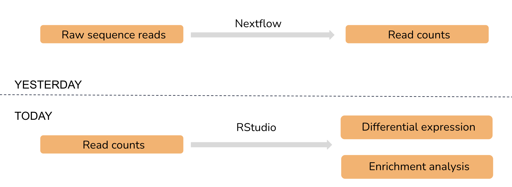
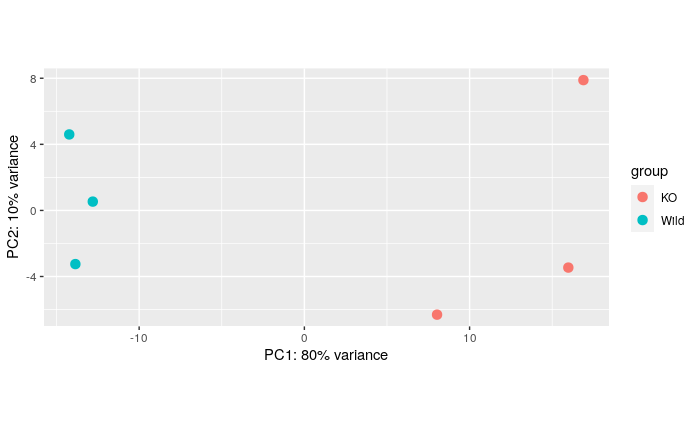
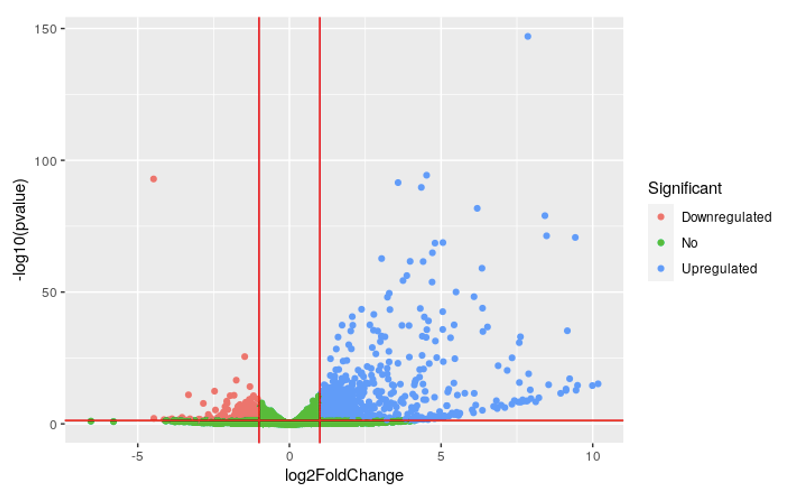
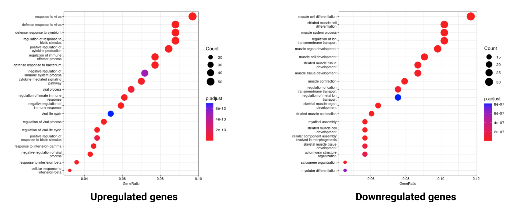

Day 2 wrap up
RNA-seq: reads to differential gene expression workshop series

In this session, we used the count matrix generated by the nfcore-rnaseq pipleine to identify differentially expressed genes and functional enrichments
Takeaways
2.5.1 Exploratory analysis
The principle component analysis shows a good separation of the sample across conditions

**2.5.2 Differential expression analysis
Gtf2ird1 KO showed dysregulation of many genes and many functionally enriched gene ontologies (GO).
Total 19,859 genes in mouse genome.
- LFC > 0 (up): 1,353 DE genes (6.8%)
- LFC < 0 (down): 984 DE genes (5%)

2.5.3 Functional enrichment analysis
Total GO enrichments identified from DE genes.
- Categories form Up-regulated genes : 823
- Categories form Down-regulated genes : 255

The most significantly enriched GO terms captured high-level biological functions that weren’t all related to our phenotypes of interest. We will go back to the biology to make sense of all these results.
Which ontologies in the list are relevant to your experiment
Craniofacial development
Disorders relate to the bones of the skull (cranio) and face. Lead to distinctive facial features
GO: Wnt pathway
Involved in
- cytoskeletal dynamics and cell adhesion
- promote the differentiation of skin epithelial cells and the development of hair follicles
GO: skin development, epidermis development
Cardiovascular abnormalities
GO: striated muscle tissue development
GO: muscle system process, muscle cell development, muscle cell differentiation
GO: sarcomere organisation
2.5.4 Experimental considerations / limitations.
- Experimental design: Choose the right tissue for the research question.
- Number of replicates: To improve statistical power and overcome any problems due to outliers.
- Realistic interpretation of the results.
2.5.5 Reproducible analysis using Rstudio with Rmarkdown
We used Singularity containers for portable and reproducible analysis